## Audit POC #### Envers & Javers Created by [Arnošt Havelka](http://cz.linkedin.com/in/arnosthavelka/)
## Agenda 1. Requirements for audit 1. Hibernate Envers 1. Javers details 1. Comparision 1. Summary & decision
## 1. Requirements for audit 1. Requirements 1. Nice to have features <p><small>See: <a href="http://oxygen-confluence.ifs.dev.dbgcloud.io:8090/display/OX/Audit">Confluence page</a></small></p>
### 1.1 Requirements |#|Definition| |--|--| |R1|Every data change [in PART module] is audited| |R2|Allow to list changes of entity (show history)| |R3|Simplicity (easy to use & understand)|
### 1.2 Nice to have features (optional) |#|Definition| |--|--| |O1|Group changes together| |O2|Extensible (features or infrastructure)| |O3|See changed attributes (diff)| |O4|Get entity detail in some revision (publishing)| |O5|Independence on modules| |O6|PDM change agnostic|
## 2. Hibernate Envers 1. General Info 1. Links 1. Configuration 1. Implementation 1. Usage 1. DB Data 1. Results
### 2.1 General Info |Key|Value| |--|--| |Branch|IFSOXY-1033-audit-poc-envers| |PR|<a href="https://github.deutsche-boerse.de/dev/cs.oxygen/pull/727"># 727</a></small>| |DB schema|OXG_PART_ENVERS|
### 2.2 Links https://hibernate.org/orm/envers/ https://spring.io/projects/spring-data-envers https://docs.jboss.org/hibernate/stable/orm/userguide/html_single/chapters/envers/Envers.html https://github.com/rashidi/spring-data-envers-audit-entity
### 2.3 Configuration [1/3] #### Maven dependency ``` <dependency> <groupId>org.springframework.data</groupId> <artifactId>spring-data-envers</artifactId> </dependency> ```
### 2.3 Configuration [2/3] #### Spring Boot Change JPA repositories to support Envers ``` @Configuration @EnableJpaRepositories( repositoryFactoryBeanClass = \ EnversRevisionRepositoryFactoryBean.class ) public class EnversConfiguration { } ```
### 2.3 Configuration [3/3] #### Properties ##### Automatic DDL update ``` spring.jpa.hibernate.ddl-auto=update ``` ##### Allow modification DB flag ``` spring.jpa.properties.org. \ hibernate.envers.global_with_modified_flag=true ```
### 2.4 Implementation [1/2] #### Repository Extends repository with `RevisionRepository` ``` @Repository public interface PscRepository extends AbstractModelRepository<Psc>, RevisionRepository<Psc, Long, Integer> { } ```
### 2.4 Implementation [2/2] #### JPA Entity Annotate entity with `@Audit` ``` @Entity @Table( name = PscParty.TABLE_NAME ) @Audited ... public class PscParty extends AbstractModelEntity { ... @ManyToOne( fetch = LAZY ) ... @Audited( targetAuditMode = NOT_AUDITED ) private PartInstRoleRelship partInstRoleRelship; } ```
### 2.5 Usage ``` @NonNull private PscRepository repository; public Optional<Revision<Integer, Psc>> getHistoryRevision( @NotNull Long pscId, @NotNull Integer revision ) { return repository.findRevision( pscId, revision ); } public Optional<Revision<Integer, Psc>> getLastRevision( @NotNull Long pscId ) { return repository.findLastChangeRevision( pscId ); } ```
### 2.6 DB data [1/3] 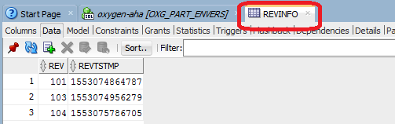
### 2.6 DB data [2/3] 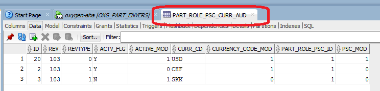
### 2.6 DB data [3/3] 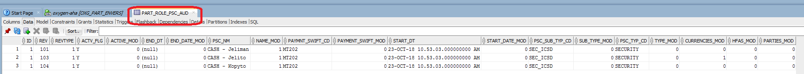
### 2.6 Results #### Changes ``` { "content": [ { "metadata": { "delegate": { "id": 101, "timestamp": 1553074864787, "revisionDate": "2019-03-20T09:41:04.787+0000" }, "revisionNumber": 101, "revisionDate": "2019-03-20T10:41:04.787", "revisionInstant": "2019-03-20T09:41:04.787Z", "requiredRevisionNumber": 101, "requiredRevisionInstant": "2019-03-20T09:41:04.787Z", "requiredRevisionDate": "2019-03-20T10:41:04.787" }, "entity": { "insertedTimestamp": "2019-03-20T12:09:52.916+0000", "lastUpdatedTimestamp": null, "lastUpdatedUser": null, "active": true, "partRole": null, "id": 1, "name": "CASH - Jeliman", "type": "SECURITY", "subType": "SEC_ICSD", "paymentSwift": "MT202", "startDate": "2018-10-23T08:53:03.000+0000", "endDate": null, "currencies": [], "parties": [], "hfas": [] }, "revisionNumber": 101, "revisionDate": "2019-03-20T10:41:04.787", "requiredRevisionNumber": 101, "requiredRevisionInstant": "2019-03-20T09:41:04.787Z", "requiredRevisionDate": "2019-03-20T10:41:04.787", "revisionInstant": "2019-03-20T09:41:04.787Z" }, ... ] ```
## 3. Javers 1. General Info 1. Links 1. Configuration 1. Implementation 1. Usage 1. DB Data 1. Results
### 3.1 General Info |Key|Value| |--|--| |Branch|IFSOXY-1033-audit-poc-javers| |PR|<a href="https://github.deutsche-boerse.de/dev/cs.oxygen/pull/743"># 743</a></small>| |DB schema|OXG_PART_JAVERS|
### 3.2 Links https://javers.org/documentation/spring-boot-integration/ https://javers.org/blog/2017/12/javers-vs-envers-comparision.html
### 3.3 Configuration [1/2] #### Maven dependency ``` <dependency> <groupId>org.javers</groupId> <artifactId>javers-spring-boot-starter-sql</artifactId> <version>5.3.2</version> </dependency> ```
### 3.3 Configuration [2/2] #### Properties Disable Javers schema creation ``` javers.sqlSchemaManagementEnabled = false ```
### 3.4 Implementation [1/2] #### Mark desired repository with audit annotation ``` @Repository @JaversSpringDataAuditable public interface PscRepository extends AbstractModelRepository<Psc> { } ```
### 3.4 Implementation [2/2] #### Exclude attribute from auditing with `@DiffIgnore` ``` @MappedSuperclass ... public abstract class AbstractBaseEntity implements BaseEntity { ... @Column( name = "ISRT_TMSTMP", nullable = false ) @DiffIgnore private Date insertedTimestamp = new Date(); } ```
### 3.5 Usage [1/5] #### Changes ``` @NonNull private final Javers javers; public String getChanges( @NotNull Long pscId ) { List<Change> changes = javers.findChanges( QueryBuilder.byInstanceId( pscId, Psc.class ) .withNewObjectChanges( true ) .withScopeDeepPlus() .build() ); return javers.getJsonConverter().toJson( changes ); } ```
### 3.5 Usage [2/5] #### Snapshots ``` @NonNull private final Javers javers; public String getSnapshots( @NotNull Long pscId ) { List<CdoSnapshot> snapshots = javers.findSnapshots( QueryBuilder.byInstanceId( pscId, Psc.class ) .withScopeDeepPlus() .build() ); return javers.getJsonConverter().toJson( snapshots ); } ```
### 3.5 Usage [3/5] #### Changes by commit ID ``` @NonNull private final Javers javers; public String getChangesByCommiId(@NotNull BigDecimal commitId ) { List<Change> changes = javers.findChanges( QueryBuilder.anyDomainObject() .withCommitId( commitId ) // .withScopeDeepPlus() .build() ); return javers.getJsonConverter().toJson( changes ); } ``` _Note : not working on Oracle now_
### 3.5 Usage [4/5] #### Snapshot from version ``` public Psc getFirstShadowByVersion( @NotNull Long pscId, @NotNull Long version ) { List<Shadow<Psc>> shadows = javers.findShadows( QueryBuilder.byInstanceId( pscId, Psc.class ) .withVersion( version ) .withScopeDeepPlus() .build() ); return shadows.get( 0 ).get(); } ```
### 3.5 Usage [5/5] #### Diff ``` public Diff getDiff( @NotNull Long pscId ) { List<Shadow<Psc>> shadows = javers.findShadows( QueryBuilder.byInstanceId( pscId, Psc.class ) .withNewObjectChanges( true ) .withScopeDeepPlus() .build() ); Psc firstPsc = shadows.get( 0 ).get(); Psc lastPsc = shadows.get( shadows.size() - 1 ).get(); return javers.compare( firstPsc, lastPsc ); } ```
### 3.6 DB data [1/3] 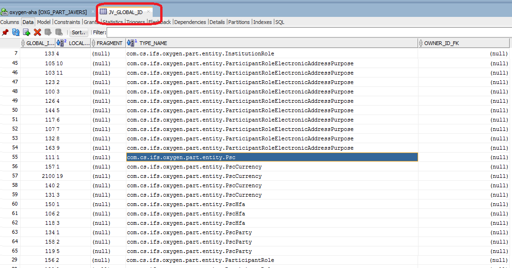
### 3.6 DB data [2/3] 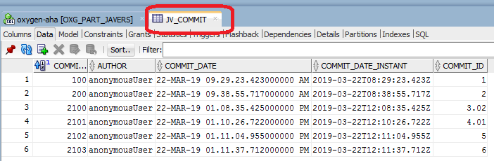
### 3.6 DB data [3/3] 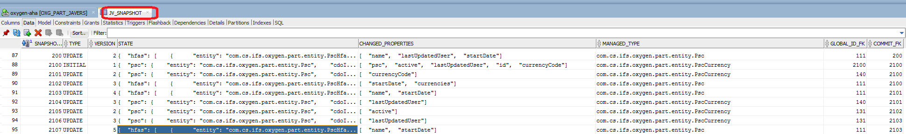
### 3.6 Results [1/4] #### Example of PSC update ``` { "name": "CASH - Hastrman", "currencies": [ { "id": 2, "currencyCode": "CHF" }, { "currencyCode": "USD" } ] } ``` #### Logs from Javers ``` Commit(id:9.0, snapshots:1, author:anonymousUser, changes - ValueChange:2), done in 281 millis (diff:265, persist:16) Commit(id:10.0, snapshots:3, author:anonymousUser, changes - ValueChange:1 NewObject:1 ListChange:1), done in 203 millis (diff:187, persist:16) Skipping persisting empty commit: Commit(id:11.0, snapshots:0, author:anonymousUser, changes -) Commit(id:11.0, snapshots:0, author:anonymousUser, changes -), done in 93 millis (diff:93, persist:0) ```
### 3.6 Results [2/4] #### Changes ``` [ { "changeType": "ValueChange", "globalId": { "entity": "com.cs.ifs.oxygen.part.entity.Psc", "cdoId": 1 }, "commitMetadata": { "author": "anonymousUser", "properties": [], "commitDate": "2019-03-22T13:11:37.712", "commitDateInstant": "2019-03-22T12:11:37.712Z", "id": 6 }, "property": "name", "left": "CASH - Hejkal", "right": "CASH - Bludicka" }, ... ] ```
### 3.6 Results [3/4] #### Snapshots ``` [ { "commitMetadata": { "author": "anonymousUser", "properties": [], "commitDate": "2019-03-22T13:11:37.712", "commitDateInstant": "2019-03-22T12:11:37.712Z", "id": 6 }, "globalId": { "entity": "com.cs.ifs.oxygen.part.entity.Psc", "cdoId": 1 }, "state": { "hfas": [ { "entity": "com.cs.ifs.oxygen.part.entity.PscHfa", "cdoId": 1 }, { "entity": "com.cs.ifs.oxygen.part.entity.PscHfa", "cdoId": 2 }, { "entity": "com.cs.ifs.oxygen.part.entity.PscHfa", "cdoId": 3 } ], "paymentSwift": "MT202", "name": "CASH - Bludicka", "parties": [ { "entity": "com.cs.ifs.oxygen.part.entity.PscParty", "cdoId": 1 }, { "entity": "com.cs.ifs.oxygen.part.entity.PscParty", "cdoId": 2 }, { "entity": "com.cs.ifs.oxygen.part.entity.PscParty", "cdoId": 5 } ], "active": true, "lastUpdatedUser": "OXG_APPL_U", "subType": "SEC_ICSD", "id": 1, "partRole": { "entity": "com.cs.ifs.oxygen.part.entity.ParticipantRole", "cdoId": 6 }, "type": "SECURITY", "startDate": "2018-10-23T10:53:03", "currencies": [ { "entity": "com.cs.ifs.oxygen.part.entity.PscCurrency", "cdoId": 2 }, { "entity": "com.cs.ifs.oxygen.part.entity.PscCurrency", "cdoId": 1 }, { "entity": "com.cs.ifs.oxygen.part.entity.PscCurrency", "cdoId": 3 }, { "entity": "com.cs.ifs.oxygen.part.entity.PscCurrency", "cdoId": 19 } ] }, "changedProperties": [ "name", "startDate" ], "type": "UPDATE", "version": 5 }, ... ] ```
### 3.6 Results [4/4] #### Diff ``` Diff: * changes on com.cs.ifs.oxygen.part.entity.PscCurrency/3 : - 'lastUpdatedUser' changed from 'demo data' to 'OXG_APPL_U' * changes on com.cs.ifs.oxygen.part.entity.Psc/1 : - 'currencies' collection changes : 3. '...PscCurrency/19' added - 'lastUpdatedUser' changed from 'init data' to 'OXG_APPL_U' - 'name' changed from 'CASH - ARS' to 'CASH - Budulinek' * changes on com.cs.ifs.oxygen.part.entity.PscCurrency/2 : - 'currencyCode' changed from 'CZK' to 'CHF' - 'lastUpdatedUser' changed from 'demo data' to 'OXG_APPL_U' * new object: com.cs.ifs.oxygen.part.entity.PscCurrency/19 ```
## 4. Comparision 1. Evaluation of Requirements 1. Evaluation of Nice to have features 1. Comunity 1. Trends 1. Found Issues 1. Summary
### 4.1 Evaluation of Requirements |#|Description|Envers|Javers| |--|--|--|--| |R2|List changes|1|1| |R3|Simplicity - configuration|1|1| |R3|Simplicity - audit definition|3|1| |R3|Simplicity - usage|1|2| |R3|Simplicity - understanding|1|3| _Note : 1 ... best, 5 ... worst_
### 4.2 Evaluation of Nice to have features |#|Description|Envers|Javers| |--|--|--|--| |01|Group changes|1|1| |O2|Extensibility|5|1| |O3|Diff|(N/A)|1| |O4|Get entity in some versin|1|1| |O5|Independence on modules (transaction?)|5|1| |O6|PDM change agnostic|5|1|
### 4.3 Comunity - Contributions [1/2] ### Envers 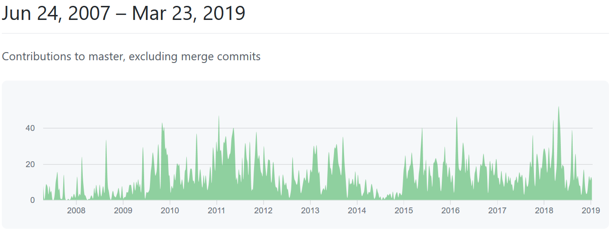
### 4.3 Comunity - Contributions [1/2] ### Javers 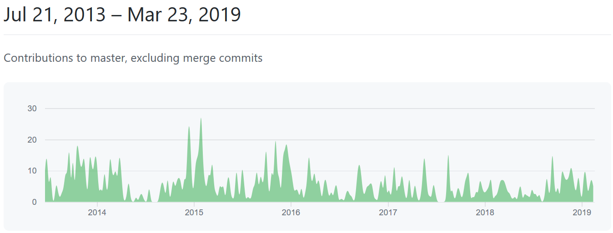
### 4.3 Comunity - Pulse [2/2] ### Envers 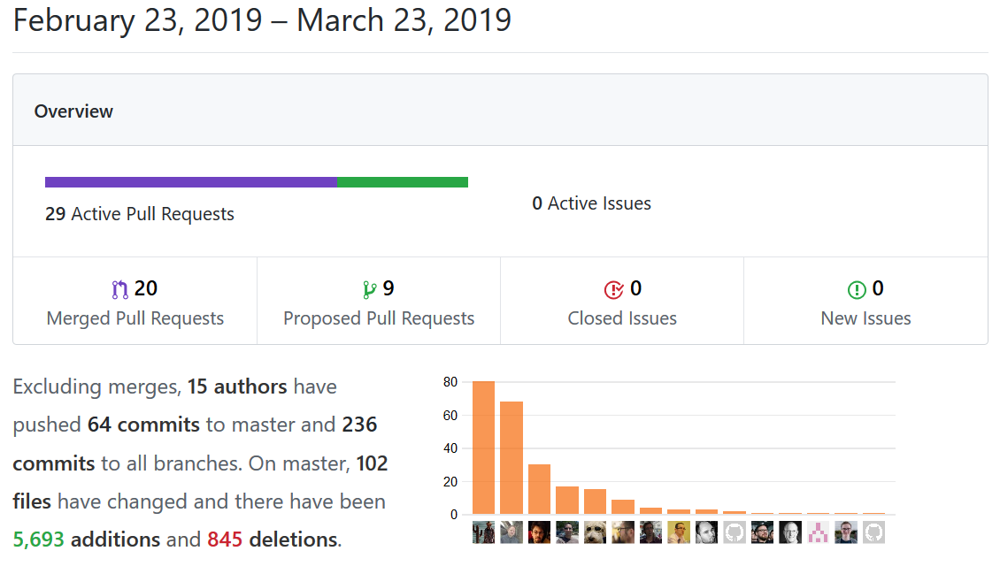
### 4.3 Comunity - Pulse [2/2] ### Javers 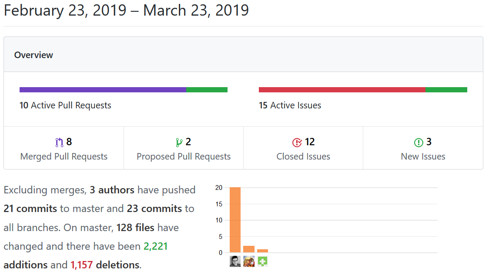
### 4.4 Google Trends 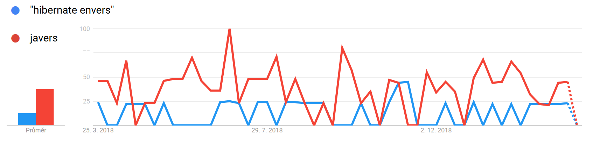
### 4.5 Found issues [1/2] #### Envers * JPA entities are polluted with Envers annotation (@Audit) * conflict with Hibernate version (Envers expects the latest one) * wrong generation of DDL (not a serious issue for us) - can be fixed with relevant information on entities (not there now) * attribute changes are not audited by default (has to be enforced by @Audited( withModifiedFlag = true )) * pretty sensitive where was auditing applied
### 4.5 Found issues [2/2] #### Javers * Javers DDL creation must be switched off - OK for us * Usage of UnmodifiableList - e.g. issue for PscParty (sorting) * Initialization of data is necessary - can be provided manually * Some attributes should be ignored - to reduce audit size with not important staff (e.g. last updated date)
## 5. Summary & decision 1. Evaluation 1. Final words 1. Decision
### 5.1 Summary & decision |Item|Envers|Javers| |--|--|--| |Requirements|1|2| |Nice to have features|4|1| |Documentation|4|1| |Comunity|1|2| |Trends|1|1| _Note : 1 ... best, 5 ... worst_
### 5.2 Final words [1/2] #### Envers * More known and proved solution (e.g. used in IFRD) * More mature and bigger comunity * Really tight to DB structure * Very sensistive to audit definition (hierarchy / relationship)
### 5.2 Final words [2/2] #### Javers * More flexible & elegant solution (we can manually store any class - e.g. DTO) * More difficult to understand how to use audit data (auditing itself is pretty easy) * Independent on DB structure * Logging related to audit storing * Small issue regarding Oracle found
### 5.3 Decision #### Let's vote
THE END
Thank you!